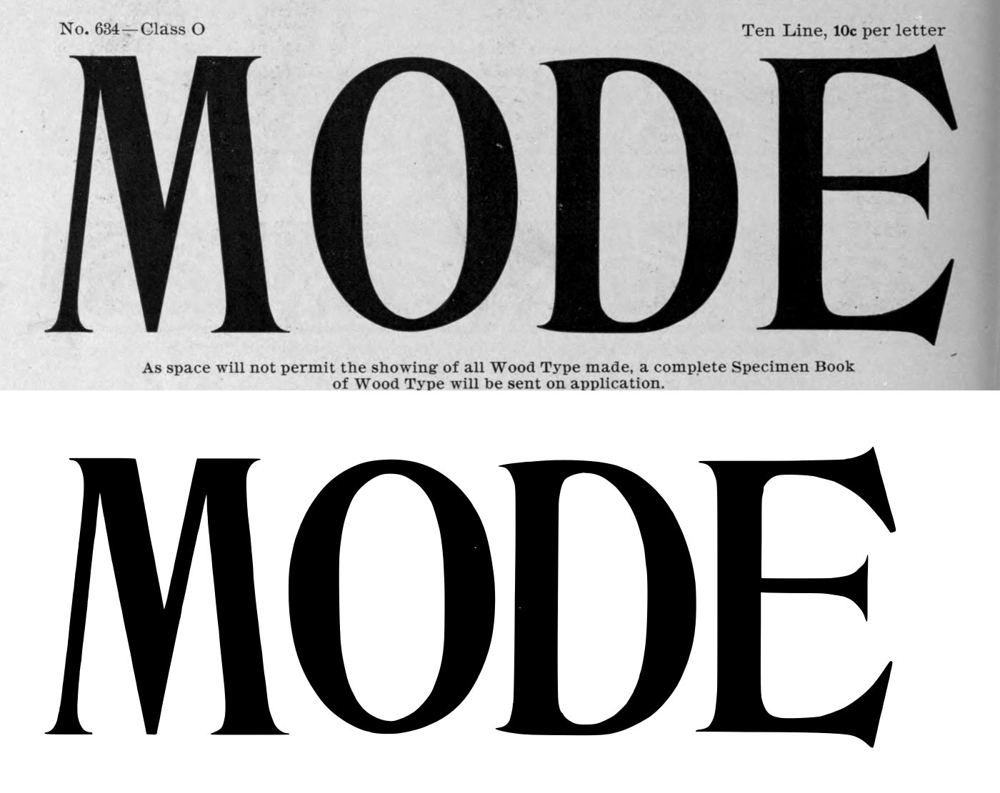
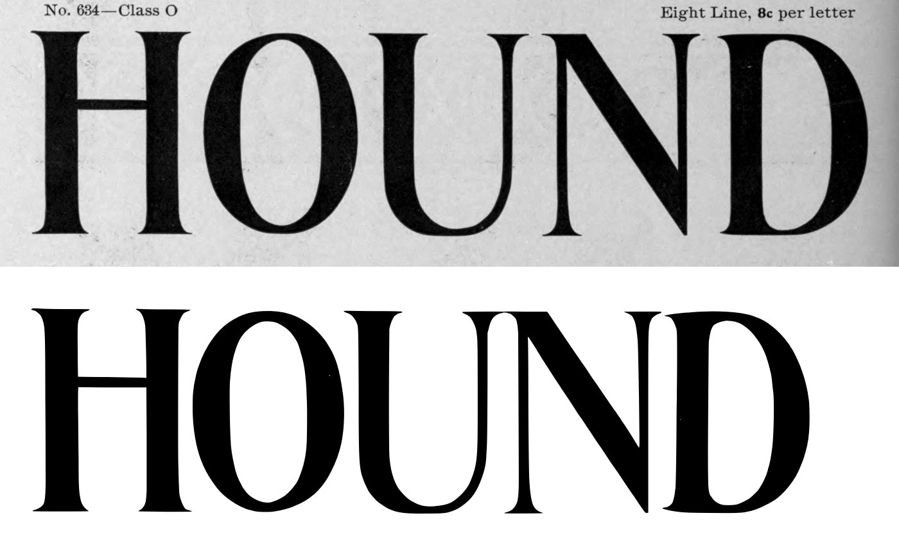
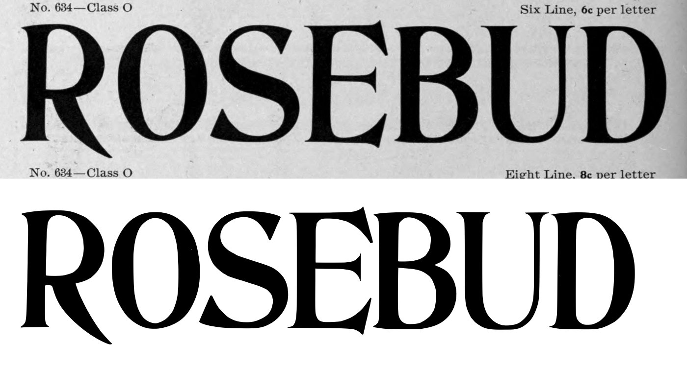
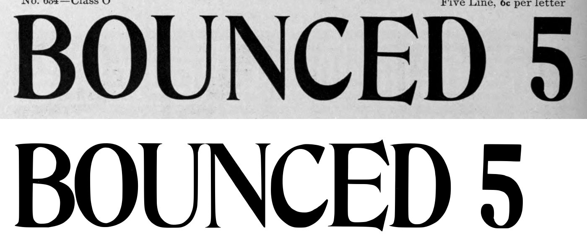
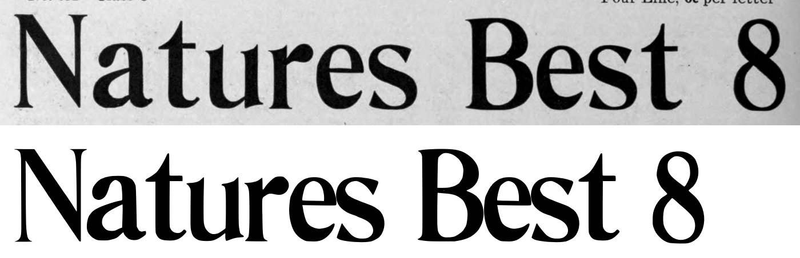
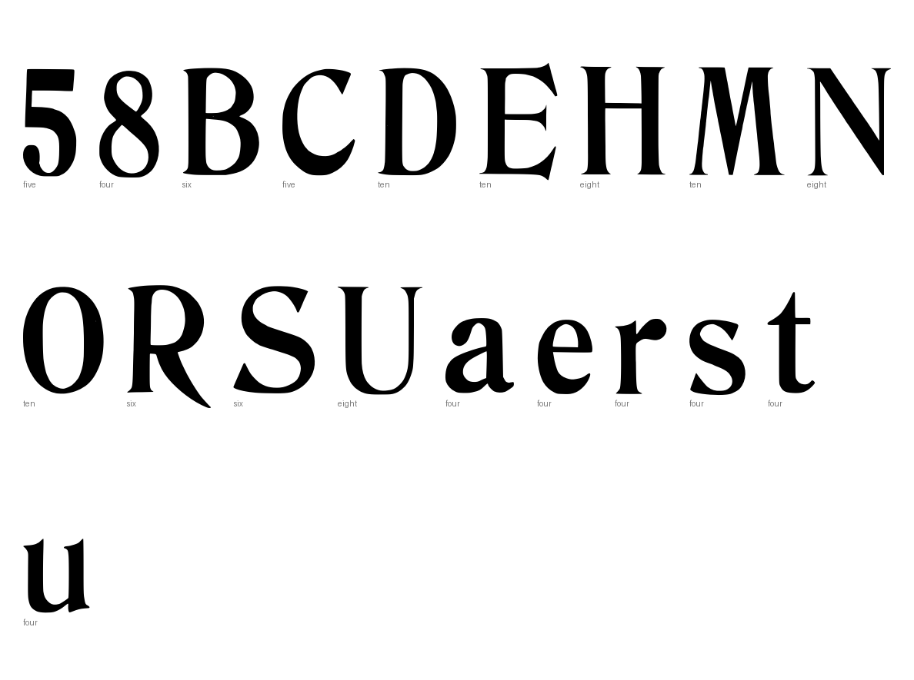
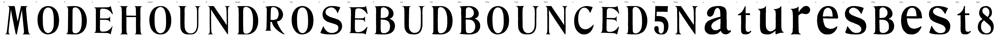

Gray letters are constructed, not traced.


1 warnings, 2 notes.
[
{
"level": "info",
"check": "specks",
"glyph": "E",
"value": 1,
"note": "marks beside the letter were recorded, not cut"
},
{
"level": "warn",
"check": "cap_height",
"glyph": "R",
"value": 0.145,
"note": "capital's ink height is off its line's cap height by more than 12% (misread box?)"
},
{
"level": "info",
"check": "specks",
"glyph": "D.six",
"value": 1,
"note": "marks beside the letter were recorded, not cut"
}
]
{
"888:ten": {
"n_caps": 4,
"cap_height_px": 665.0,
"cap_source": "caps",
"baseline_px": 3428.5,
"baselines": {
"6": 3428.5
},
"glyphs": [
"M",
"O",
"D",
"E"
],
"stem_px": 66.0,
"scale": 1.05263,
"stem_units": 69.5
},
"888:eight": {
"n_caps": 5,
"cap_height_px": 533,
"cap_source": "caps",
"baseline_px": 2597,
"baselines": {
"5": 2597
},
"glyphs": [
"H",
"O.eight",
"U",
"N",
"D.eight"
],
"stem_px": 72,
"scale": 1.31332,
"stem_units": 94.6
},
"888:six": {
"n_caps": 7,
"cap_height_px": 401,
"cap_source": "caps",
"baseline_px": 1902,
"baselines": {
"4": 1902
},
"glyphs": [
"R",
"O.six",
"S",
"E.six",
"B",
"U.six",
"D.six"
],
"stem_px": 58,
"scale": 1.74564,
"stem_units": 101.2
},
"888:five": {
"n_caps": 7,
"cap_height_px": 333,
"cap_source": "caps",
"baseline_px": 1341,
"baselines": {
"3": 1341
},
"glyphs": [
"B.five",
"O.five",
"U.five",
"N.five",
"C",
"E.five",
"D.five",
"five"
],
"figure_height_px": 333,
"stem_px": 27,
"scale": 2.1021,
"stem_units": 56.8,
"figure_height": 700
},
"888:four": {
"n_caps": 2,
"cap_height_px": 265.5,
"cap_source": "caps",
"baseline_px": 848.0,
"baselines": {
"2": 848.0
},
"glyphs": [
"N.four",
"a",
"t",
"u",
"r",
"e",
"s",
"B.four",
"e.four",
"s.four",
"t.four",
"eight"
],
"x_height_px": 186,
"figure_height_px": 264,
"stem_px": 27.5,
"scale": 2.63653,
"stem_units": 72.5,
"x_height": 490,
"figure_height": 696
}
}
{
"archive_id": "bookoftypespecim00barnrich",
"title": "Book of type specimens. Comprising a large variety of superior copper-mixed types, rules, borders, galleys, printing presses, electric-welded chases, paper and card cutters, wood goods, book binding machinery etc., together with valuable information to the craft. Specimen book no.9",
"creator": [
"Barnhart, bros. & Spindler, firm, type founders, Chicago",
"De Young family",
"De Young, Charles, 1881-"
],
"publisher": "Chicago, Barnhart bros. & Spindler",
"date": "[1907]",
"ppi": 400,
"url": "https://archive.org/details/bookoftypespecim00barnrich",
"copyright_status": "NOT_IN_COPYRIGHT",
"contributor": "University of California Libraries",
"leaves": [
888
]
}